ul. Tysiąclecia 1/3
62-020 Swarzędz
62-020 Swarzędz
405, 406, 407
Na terenie posesji znajduje się bezpłatny parking dla Klientów.

Dworzec kolejowy
w bliskiej odległości spacerem
Okolice:
Kancelaria notarialna znajduje się w południowo-zachodniej części Swarzędza (Nowa Wieś), przy wschodniej granicy administracyjnej Poznania, 8 km od Ronda Śródka (Poznań Nowe Miasto)..